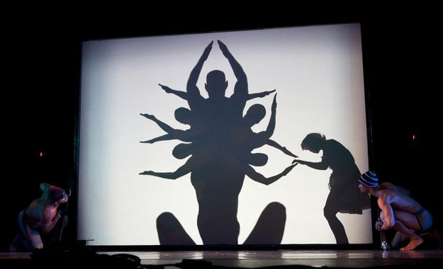
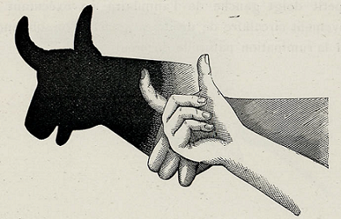

<div class="container">
  <div id="page1">
    <div  >

      <h2>Déroulement</h2>

      <ol>
        <li>
          Tends un grand drap blanc en t’aidant du mobilier de chez toi pour l’accrocher (porte-manteau, porte,
          armoires…). Demande de l’aide à tes parents si besoin.
        </li>
        <li>
          Place une lampe du côté des acteurs
        </li>
        <li>
          Place toi dans un endroit sombre pour que la lumière ressorte et raconte une histoire Gauloise avec ton corps.
          Tu peux faire des têtes d’animaux avec tes mains, tu peux aussi jouer avec des accessoires.
        </li>

      </ol>

      
      
    </div>
  </div>
</div>